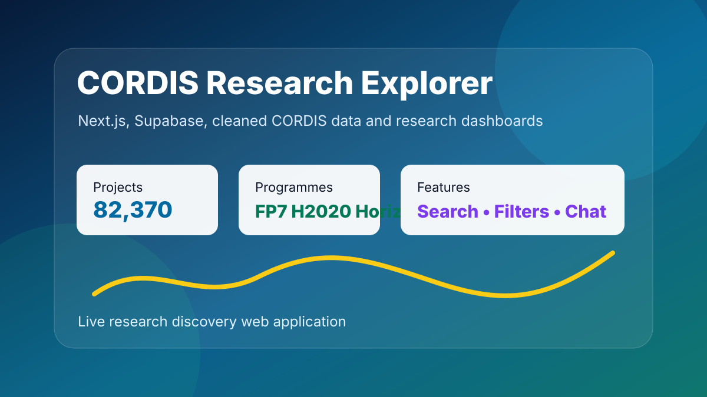

Portable Data Engineering Pipeline
CORDIS to Supabase Pipeline
A portable Python ETL flow that prepares cleaned CORDIS project data for the web application and loads the final web dataset into Supabase.

PROJECT DOCUMENT
CORDIS to Supabase Pipeline Full Document
Document Preview
This document explains the Python ETL design, data cleaning logic, validation checks, Gold-style outputs and Supabase loading process.
- Source extraction and data preparation
- Programme, status and country standardisation
- Gold-style fact and dimension outputs
- Supabase web table load and validation
82,370
Web-ready CORDIS project records validated after cleaning.
0 blanks
No blank programme or status values in the final validation output.
Portable
Designed to run outside Microsoft Fabric when needed.
Purpose
The pipeline prepares the final web dataset using Python so the data can be rebuilt and loaded again when needed.
Pipeline Flow
Source files→Extract→Transform→Gold outputs→Web dataset→Supabase load
Key Work
- Standardised programme values across FP7, H2020 and Horizon Europe.
- Improved country mapping and reduced unknown country labels.
- Generated Gold-style fact and dimension outputs.
- Created a web-optimised cordis_projects table for search and dashboard use.
- Added validation checks for row counts, duplicate IDs, blank programme values and unknown country rows.
Outcome
The pipeline supports the live CORDIS Research Explorer app and gives a repeatable path to rebuild the cleaned dataset.